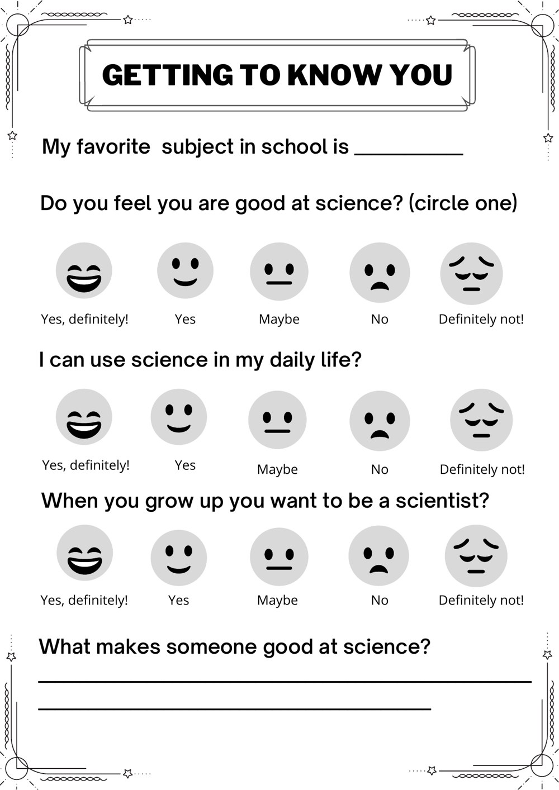
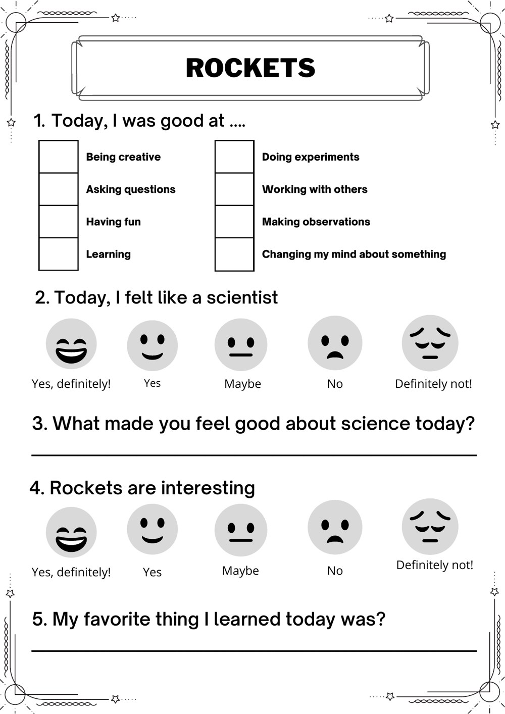
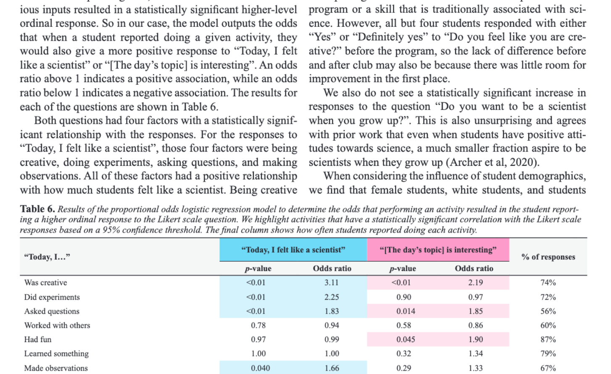

04 / PROGRAM EVALUATION + MIXED METHODS
Dark Skies, Bright Kids was built to make science feel accessible. The evaluation question was harder: could we measure whether students left seeing science — and themselves — differently?
MEASUREMENT DESIGN
The instrument had to capture identity, confidence, interest, and ideas about how science works — without turning an elementary-school astronomy club into a psychometrics exam.
The evaluation used a before-club survey, after-club survey, and short daily wrap-ups. Students rated statements on a five-point smiley-face scale, answered true/false Nature of Science questions, checked which scientific practices they used that day, and wrote short responses.


RQ1 / BEFORE → AFTER
Switch the metric to see the matched pre/post means from the study.
Students reported significantly higher confidence in being good at science after the program.
The strongest before/after result was self-perceived science ability. Creativity started near the top of the scale and had little room to rise; desire to become a scientist was more variable and did not change significantly.
A useful evaluation does more than ask “did scores go up?” It asks what changed, for whom, and which parts of the experience were associated with that change.
RQ3 / ORDINAL REGRESSION
Click an activity. The model estimated how that activity changed the odds of a higher Likert-scale response, while accounting for program differences.
Students who reported being creative had 3.11× the odds of reporting a higher “felt like a scientist” response.
The study used a proportional odds logistic regression model in R. Odds ratios above 1 indicate a positive association; below 1 indicate a negative association.
FROM ANALYSIS → PROGRAM DESIGN
Creativity was the strongest positive correlate of both feeling like a scientist and finding the topic interesting.
Asking questions was positively associated with both outcomes, reinforcing inquiry as part of the experience rather than an add-on.
Doing experiments was strongly associated with feeling like a scientist, even though it was not significantly associated with topic interest.
Nature-of-Science responses changed only slightly. The paper argues that implicit exposure alone is not enough to correct misconceptions.
That distinction is exactly why I like evaluation work: engagement, identity, learning, and aspiration are different outcomes. A program can move one without moving all four.
PUBLISHED WORK
How Informal Science Education Influences Elementary Students’ Perceptions of Science and Themselves
Journal of STEM Outreach · 2023Molly K. Finn, Renato Mazzel, Blake Drechsler, Zoie Szelkamp, Mihika Rao, Prakamya Agrawal, and Anne McAlister
The table above is from the published paper and shows the odds ratios, p-values, and response frequencies for the daily-activity model.